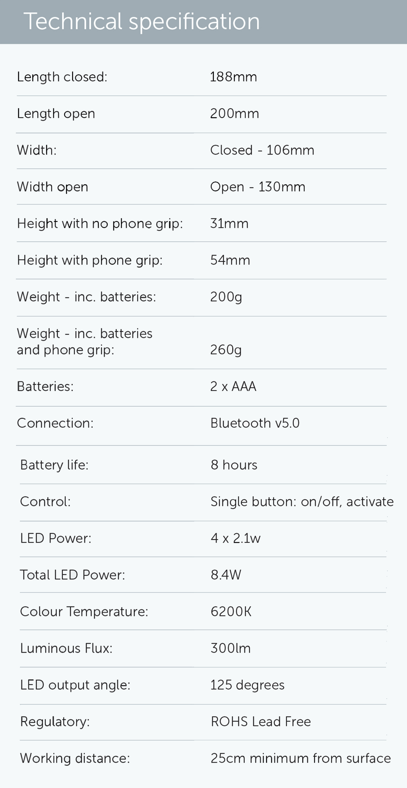
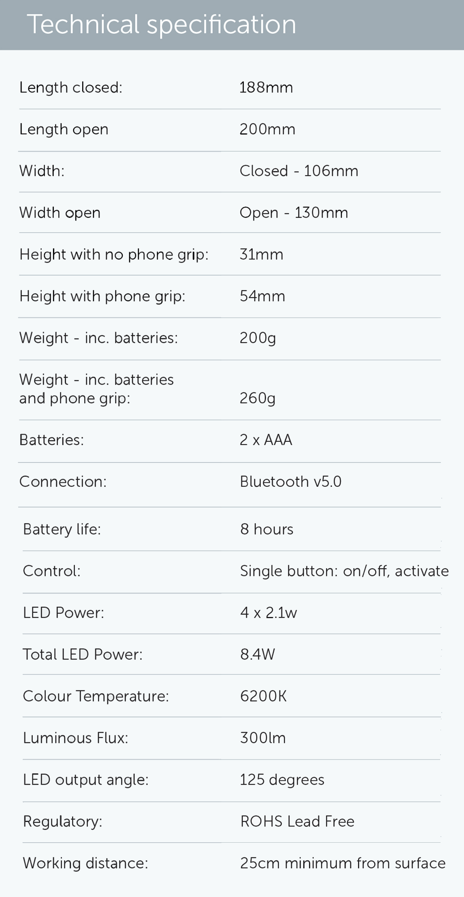

Helping NDT and CM professionals to quickly and accurately identify surface defects as a first step in the testing process
Helping NDT and CM professionals to quickly and accurately identify surface defects as a first step in the testing process
Solving an industry problem
Solving an industry problem
The UK Non-Destructive Testing (NDT) and Condition Monitoring (CM) industry has invested in various defect testing techniques such as Eddy Current, LiDAR, Ultrasonic, Dye Penetrant and Radiography to ensure the safety, quality and productivity for major industries.
To keep large assets operational, companies rely on NDT and CM regimes to determine the need for maintenance or repairs. This extends asset lifespan, reducing the need for capital investment to replace integral equipment and prevents operational failures. Over 25,000 inspections are carried out every day in the UK.
Aralia System Ltd’s (ASL) MPPS Illuminator is designed to be used as the first step in the NDT and CM process. Acting as a useful aid it can quickly and easily be used on site for initial assessments to determine if additional resources or more rigorous testing is required. Working in conjunction with a smartphone our low-cost device uses photometric stereo to take detailed 3D colour images of a surface and any imperfections up to 5mm below the surface.
How does it work?
How does it work?
Our MPPS Illuminator is an extremely affordable Photometric Stereo (PS) illumination device that interlocks with a smartphone enabling it to capture and process images revealing high-resolution and detailed 3D colour images of a surface and any imperfections up to 5mm below the surface.
Our device works ’out of the box’ with minimal training and all necessary software is easy to download. The images can be processed locally on the phone, via the cloud and transmitted off site for a remote assessment by expert review or automated via Machine Learning which is critical during pandemics such as COVID-19. The simplicity and low price point of our innovative MPPS Illuminator enables high volumes to be readily distributed whenever necessary. Our solution also includes facilities for archiving, displaying and processing images through the application of machine learning.
- Low cost
- Saves time, money and resources
- Improves accuracy of visual testing
- Easy to use with user friendly app
- Indoor and outdoor applications
- Helps prevent costly structural and asset failure between regular annual inspections
- Includes active and passive thermography options
Our leading technology is also being further advanced to include photogrammetry, time-of-flight (TOF) and thermal imaging techniques.


The business benefits - affordable, effective and accurate...
The business benefits - affordable, effective and accurate...
- Saves time and money: implement the MPPS Illuminator ’on the spot’ to identify any surface weakness requiring further inspection. This allows valuable resources to be allocated where they’re most needed.
- Improves accuracy of visual testing: an excellent aid for visual inspections and will improve any margin of error, e.g. cracks not visible to the human eye up to 5mm below the surface. Helps prevent costly structural or asset failure in between regular annual inspections.
- Improves accuracy of visual testing
- Indoor and outdoor applications: using a bespoke cowl the MPPS Illuminator will work outdoors as well as indoor environments. Infrared capabilities will enable images to be taken where there’s poor natural light.
- Easy to use: working in unison smartphones the MMPS Illuminator provides a familiar experience. Our user-friendly app provides a step by step implementation guide.
- Asset protection: post COVID-19 a global recession will drive the need for sustainability, and the requirement to use testing and monitoring techniques to preserve the integrity of assets and infrastructures. This will shorten supply chains and the circular economy (local test and repair)
- Sustainable credentials: the MPPS Illuminator is made from recyclable materials and won’t contribute to expensive landfills
- Boosting our local economy: UK based manufacturing will generate local employment. We will also use a UK based postal or delivery service to distribute our product to end users and/or partners, e.g. distributors
- Connects to a DICCONDE database with AI processing.
Our MPPS Illuminator is a useful aid for NDT and CM professionals to quickly and accurately identify surface defects as a first step in the testing process. Unlike liquid penetrant testing, where the dye has to sit and fully absorb into the surface (taking between one to three hours), our solution works on the spot within minutes. Using a simple AI tool it can perform any initial analysis locally and send images remotely off site for expert review.
 
